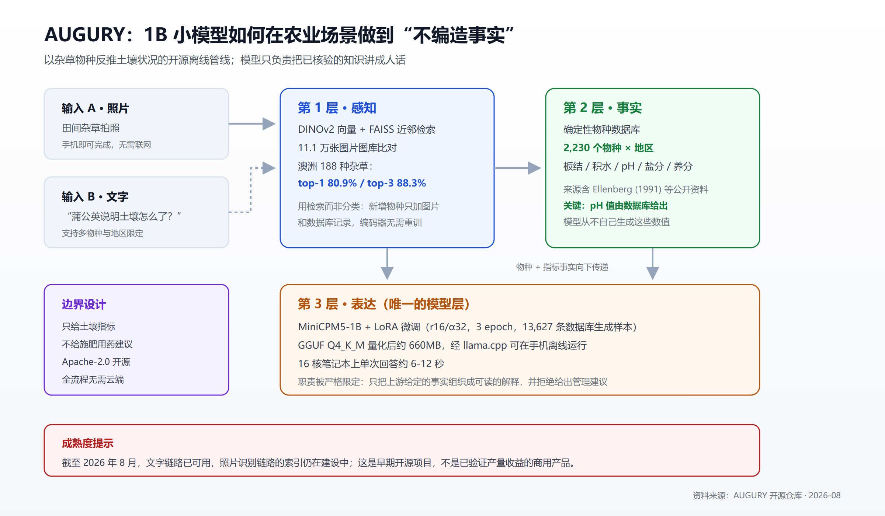
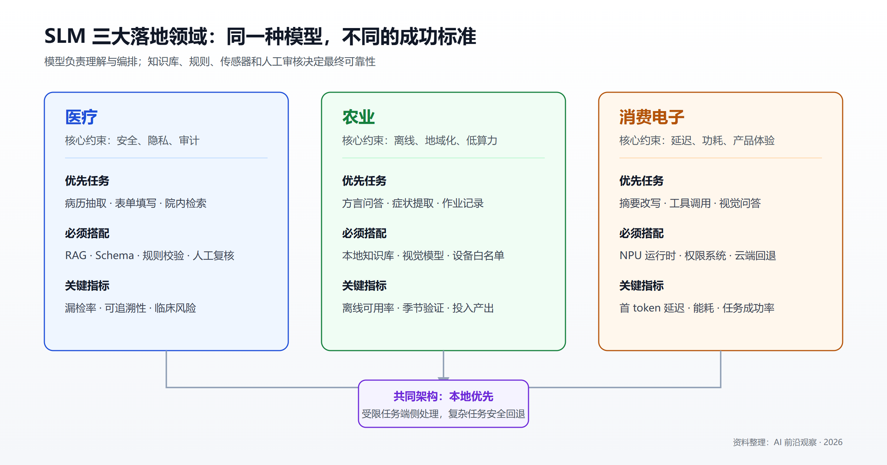
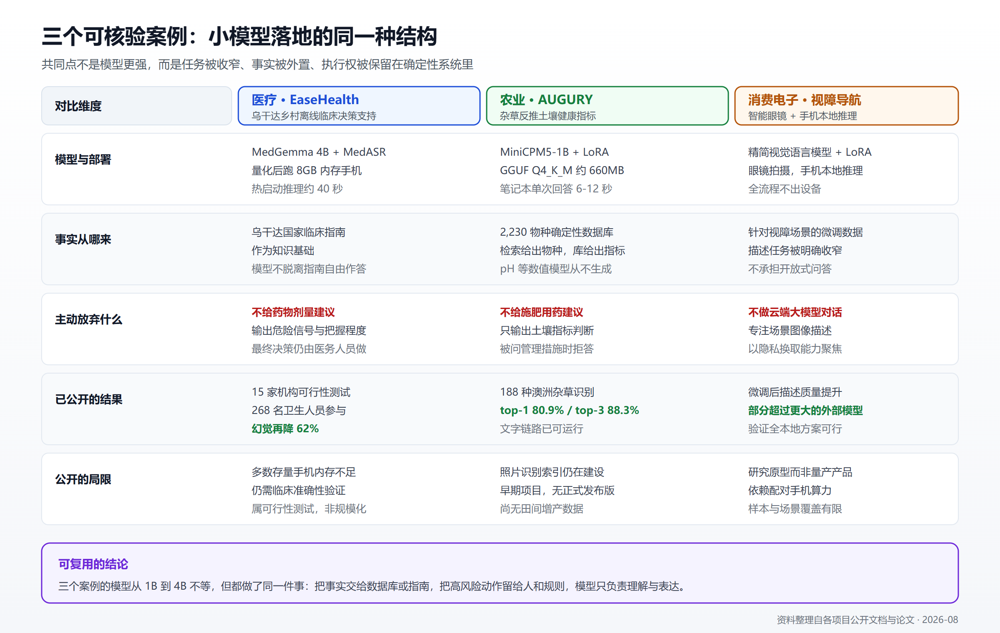

2026 SLM 生态全景：从"参数竞赛"到"场景为王"的端侧革命
当 3B 模型进入手机，AI 的竞争规则变了
2026 年，小语言模型（Small Language Model，SLM）最值得关注的变化，不是又多了几个榜单冠军，而是它开始成为终端产品的默认技术选项。Apple 已公开约 30 亿参数的端侧基础模型，并通过系统框架向应用开发者开放结构化生成与工具调用；OpenBMB 发布的 MiniCPM5-1B，则把 10 亿参数级模型明确定位到本地部署和资源受限设备。与此同时，Grand View Research 估算全球 SLM 市场将在 2026 年达到 111 亿美元，MarketsandMarkets 却给出 2025 年 9.3 亿美元、2032 年 54.5 亿美元的另一套口径。
两个市场数字相差一个数量级，恰好说明这个品类仍在快速定义中：有人只统计生成式小模型软件，有人把边缘部署、行业模型和相关服务一起计算。比预测值更可靠的信号，是手机、PC、眼镜、车机和专用设备都在争夺同一种能力——无需持续联网、能保护数据、响应足够快，而且成本可控的本地智能。
SLM 因而不是“大模型的廉价版”，而是一种不同的工程答案：把有限的参数、内存带宽和电量集中到高频任务，把复杂开放问题交给云端或更大模型。产业竞争正从“谁的参数更多”，转向“谁能在每 GB 内存、每瓦功耗里交付更多可用能力”。
说明：本文只把具有语言理解或生成能力、可在受限环境部署的模型称为 SLM。农业无人机视觉识别、医学影像分类等传统边缘 AI 属于相邻生态，除非它们与语言模型组成多模态工作流，否则不直接等同于 SLM。
一、SLM 的边界：小不是一个固定参数数字
业界并没有统一的 SLM 参数上限。常见定义覆盖数亿到 10B 左右，也有研究把 12B、20B 甚至更大的稀疏模型纳入讨论。真正决定模型是否“足够小”的，不是参数标签，而是它能否在目标硬件上满足四个约束：内存装得下、延迟可接受、功耗可持续、任务准确率达标。
一台旗舰手机可以运行 3B 级模型，一块边缘网关可能只能承载 1B 模型，医院内网服务器则可以本地部署 27B 医疗模型。后者未必符合最严格的 SLM 定义，却与 SLM 共享同一套价值逻辑：数据不离域、能力专用化、推理成本可预测。因此，本文讨论的是一个连续谱，而不是用某条参数线把模型机械地分成“大”与“小”。
这一轮能力密度提升主要来自四类技术：高质量合成数据和知识蒸馏把大模型能力迁移到小模型；4-bit、2-bit 等量化降低权重和缓存占用；稀疏 MoE 只激活部分参数；投机解码、KV Cache 优化和混合注意力改善吞吐。它们共同改变了端侧产品的可行性，但不会消除能力边界——模型越小，越需要限定任务、约束输出和准备失败回退。
二、生态全景：模型、芯片、运行时缺一不可
模型层已经形成多条产品线：Microsoft Phi 强调小尺寸推理能力，Google Gemma/MedGemma覆盖通用与医疗方向，阿里 Qwen 提供多个密集尺寸和端侧选择，OpenBMB MiniCPM聚焦“高能力密度”和本地多模态，TinyLlama则证明 1.1B 模型可以形成完整的开源训练与部署生态。模型卡、许可证、量化版本和工具调用稳定性，正在变得和基准分数一样重要。
值得注意的是 1B 这个尺寸段的进展速度。OpenBMB 称 MiniCPM5-1B 在涵盖推理、知识、代码、指令遵循、数学与 Agent 工具调用的一组基准上取得 42.57 的平均分，高于同尺寸段强开源模型的 35.61；同时它以标准 Llama 架构发布，可直接被 transformers、vLLM、SGLang、Ollama 和 llama.cpp 消费。这两点合起来才是关键——能力提升如果不能被主流运行时直接加载，就很难变成产品。后文农业章节的案例，正是建立在"1B 模型 + 标准 GGUF 量化 + llama.cpp"这条现成链路上。
芯片层的核心不是峰值 TOPS，而是内存带宽、可用精度、算子覆盖和持续功耗。Apple 的约 3B 端侧模型采用量化感知训练等优化，说明模型与芯片协同已经前移到训练阶段。高通 2026 年公布的 Snapdragon Reality Elite 面向头显和眼镜，据公开信息可在设备端以约 45 tokens/s 运行 3B 模型；这类速度足以支撑字幕、问答和工具调用，却仍需面对摄像头常开、散热与电池寿命的共同预算。
软件层决定“一次训练能否到处运行”。FlagOS 将自己定位为面向多芯片场景的统一开源 AI 系统软件栈；其意义不只是增加一个推理框架，而是尝试把模型、编译器、算子和硬件插件之间的适配成本标准化。现实中，同一模型在不同 NPU 上可能遇到不支持的算子、量化精度差异和内存布局问题，芯片碎片化仍是端侧规模化最昂贵的隐性成本之一。
生态因此不是“选一个模型”这么简单，而是模型权重、量化方案、推理运行时、设备芯片、领域知识库和安全策略的组合。任何一层失配，都可能让实验室里的高分模型在真实设备上变成慢、热、不准或无法升级的产品。
三、医疗：SLM 的最大价值是让数据留在院内
医疗天然适合小模型，但也最不允许把“能回答”误当成“可临床使用”。Microsoft 的 BioGPT 约 3.47 亿参数，以生物医学文献为核心语料，面向关系抽取、问答和文本生成等研究任务。2026 年《Nature Biomedical Engineering》刊文指出，SLM 相比 LLM 可以成为医疗应用更可扩展、更实用、更高效的替代方案。这里的关键词是“可以”，而不是“已经自动具备临床安全性”。
当前更可行的落地任务，通常有明确输入、固定结构和可人工复核：从病历提取诊断与用药实体，把自由文本映射到病例报告表，生成医生可编辑的出院摘要，或在院内知识库中检索制度和指南。慕尼黑工业大学相关团队在 2026 年展示了两阶段本地模型流程，用 MedGemma-27B 从临床文本填写病例报告表；本地运行减少了敏感数据发送到第三方云端的需要，也便于医院记录模型版本与审计轨迹。
MedGemma 本身同时提供 4B 多模态和 27B 文本/多模态版本。4B 更接近典型 SLM，27B 则适合院内服务器而非普通移动终端。Google 的官方说明也明确提醒，MedGemma 不是开箱即用的临床级产品，实际应用通常需要微调、评估和安全工程。这一点比“模型在医学考试上得了多少分”更重要：离线部署解决的是数据边界，并不自动解决幻觉、偏差和责任边界。
2026 年 1 月的更新让这条路线更清晰。Google 发布 MedGemma 1.5 4B 和医疗语音识别模型 MedASR，并明确把 4B 定位为"小到可以离线运行"的高性价比起点，复杂纯文本任务仍推荐 27B。MedGemma 1.5 的能力扩展方向很值得注意：它新增了 CT/MRI 三维影像、全切片病理图像、用边界框做解剖定位、多时间点胸片对比，以及化验单和电子病历这类医疗文档理解。技术报告给出的增益包括全切片病理识别的宏平均 F1 提升 47%、在胸片上框出病灶位置的准确度（IoU，即框出的区域与真实区域的重合程度）提升 35%、三维 MRI 分类准确率提升 11%。换句话说，端侧医疗模型的竞争重点已经从"能不能对话"转向"能不能读懂医院里真实存在的那些数据格式"。
医疗 SLM 的可靠架构至少应包含四道防线：只允许模型基于指定病历和知识库回答；用预先定义好的字段模板（schema）限制模型只能填空、不能自由发挥；对剂量、过敏史和危险指标用固定规则再核对一遍；所有面向诊疗的内容由具备资质的人员最终确认。小模型适合做信息压缩器和流程助手，不应被包装成独立诊断主体。
案例拆解：EaseHealth 在乌干达乡村的离线临床决策支持
如果要找一个把上述四道防线真正落进产品的例子，Crane AI Labs 的 EaseHealth 值得细读。它面对的问题极其具体：乌干达乡村的一线卫生人员常常要独自处理复杂分娩、重症肺炎或新生儿急症，距离最近的医院数小时车程，既没有专科医生可以电话求助，也没有稳定网络和最新临床指南。
这个场景把"为什么必须是端侧"解释得比任何市场预测都清楚——没有网络的时候，云端模型的能力等于零。
EaseHealth 的做法是：在 Android 手机上完全离线运行经过微调的 MedGemma 4B 和 MedASR，不依赖任何云端，并以乌干达国家临床指南作为知识基础，覆盖母婴健康、儿童健康、疟疾、肺炎和结核。几个工程细节颇具参考价值：
- 量化后跑在普通设备上：模型压缩后部署在 8GB 内存的三星 A16 手机上，模型已加载好的情况下单次推理约 40 秒。这个速度放在日常消费场景不可接受，但在"数小时车程之外没有任何替代资源"的语境里完全可用——多快才算够快，是由场景定义的，不是由技术标准定义的。
- 主动放弃一部分能力：系统输出结构化的评估结果，包含需要警惕的危险信号、建议做的检查项，以及模型对自己判断有多少把握的置信度评分，但刻意不给药物剂量建议，这是明确写进设计的安全边界。
- 用工程手段而非模型规模压制幻觉：团队先测试过通用模型，发现临床场景下幻觉率无法接受；换用经过医学预训练的 MedGemma 后显著减少危险输出，再通过提示词工程和安全过滤把幻觉进一步降低 62%，并强制每条评估都给出置信度。
真实环境里的验证也做得比多数 AI 演示扎实：在完整的伦理与监管审查下，团队把应用交给一线人员在日常工作中实际使用——地点是卢韦罗地区（人口超 60 万）的 15 家医疗机构，268 名卫生人员同意参与，5 天内完成 87 份以上完全离线的临床评估。其中一个被临床合作方核实的案例是：一名助产士在长达四小时的复杂分娩中主动使用了该应用，系统提示了先兆子痫（一种以孕期高血压为主要表现的严重并发症）的风险，助产士据此安排检查、依据结果排除了这一可能，并自行做出临床决策，母亲安全分娩。
这个案例的分寸感很关键。工具没有替代临床判断，而是让人问出正确的问题——当地一位临床医务人员的评价大意是：它不开处方，它做引导。这恰恰是医疗 SLM 当前最站得住的定位。
同样要如实记录它的瓶颈：团队把设备门槛列为规模化的首要障碍，因为多数卫生人员的手机内存不足以本地运行这类模型。后续工作包括在量化感知训练之外做进一步压缩、评估更新的 Gemma 架构能否部署到 4GB 设备，以及补做临床准确性验证、本地语言支持和跨 Android 芯片的兼容性分析。这也印证了前文的判断：端侧 AI 的真实约束往往不在模型能力，而在存量设备的内存与芯片分布。
四、农业：离线语言入口，比“万能农业大脑”更现实
农业对 SLM 的需求来自真实而苛刻的环境：网络覆盖不稳定，设备算力有限，农事表达混合方言、地方品种和非标准计量单位，知识又高度依赖地区和季节。云端通用模型可以给出流畅答案，却可能不了解某个县的农药登记、当天的病害预警和本地经销规格。一个连接本地知识库、能够离线运行的小模型，反而更容易形成可验证的闭环。
可落地的第一类任务是田间语言入口。农户用语音描述叶片症状，设备把语音转成文本，SLM 提取作物、位置、生育期和症状字段，再调用本地病虫害模型或知识库。这里负责识图的可能是视觉模型，负责理解问题、组织工具调用和解释结果的才是 SLM。两者分工，比让单一模型包办全部任务更可靠。
第二类是设备与作业助手。SLM 可以把自然语言转换为灌溉、巡田或记录任务，但执行前必须经过白名单参数和设备规则校验。例如“给三号棚补水”可被转换成结构化指令，而阀门编号、最大时长和土壤阈值由确定性系统确认。模型负责降低交互门槛，控制系统继续掌握最终权限。
第三类是离线农技问答。TinyLlama 只有 1.1B 参数，适合在受限内存中实验；针对边缘设备的研究也在比较 TinyLlama、Gemma 3 1B、Llama 3.2 1B 与 DeepSeek-R1 1.5B 的延迟、能耗和量化表现。但“能在边缘跑”不代表“已经提高某种作物产量”。本次核验未找到足以支持“芫荽采收周期从 45 天缩短到 32 天”的原始论文，因此不把该数字作为 SLM 农业成效证据。农业价值应由跨季节田间试验、对照组和投入产出数据证明，而不是由一次演示推断。
案例拆解：AUGURY 如何用 1B 模型做到"不编造事实"
2026 年 8 月，OpenBMB 介绍了一个值得细看的社区项目 AUGURY。它的任务很具体：通过田间杂草物种反推土壤状况——板结、积水、pH、盐分、养分和有机质状态。项目明确只输出"指标判断"，不给施肥用药建议，整条链路无需云端，目标运行环境是手机。
它的价值不在模型多大，而在于职责划分得非常干净，正好对应上文的分层架构：
- 感知层用检索代替分类：DINOv2 提取图像向量，FAISS 在约 11.1 万张图片的图库中做近邻搜索。作者报告在 188 种澳洲杂草上取得 top-1 80.9%、top-3 88.3% 的识别率。选择检索的工程理由很实际——新增物种只需补图片和数据库记录，编码器不必重新训练。
- 事实层是确定性数据库：2,230 个物种按地区（澳洲、欧洲、英国）组织指标字典，来源包括 Ellenberg (1991) 等公开生态学资料。这里是全项目最关键的设计：pH 值之类的数字由数据库提供，模型永远不生成它们，因此也就无从"幻觉"出一个看似合理的土壤参数。
- 语言层才是 SLM：MiniCPM5-1B 经 LoRA 微调（r16/α32、3 个 epoch，13,627 条由数据库生成的样本），量化为 GGUF Q4_K_M 后约 660MB，可通过 llama.cpp 在手机端离线推理，16 核笔记本上单次回答约 6-12 秒。模型的职责被限定为把上游给定的事实组织成可读解释，并在被问到管理建议时拒答。
这个案例的说服力恰恰来自它的克制。它没有宣称"一个模型理解农业"，而是承认小模型不擅长记忆事实、容易在专业数值上出错，于是把事实存到数据库、把识别交给检索，只保留模型最擅长的部分——组织语言。这也解释了为什么 1B 模型在此场景够用：它不需要"知道"植物学，只需要"讲清楚"已经查到的结论。
也要如实说明成熟度。按仓库 2026 年 8 月的状态，文字链路已可运行，照片识别链路的检索索引仍在建设中；项目采用 Apache-2.0 与 CC-BY-4.0 开源，但目前关注度很低、尚无正式发布版本。它是一个设计思路清晰的早期工程样本，而不是已用田间数据证明增产效果的商用产品。把它当作架构参考而非效益证据，才是恰当的读法。

顺带一提，AUGURY 的路线图透露了一个正在成形的思路：把杂草识别、土壤评估、修复建议、放牧管理拆成多个各司其职的小模型，而不是训练一个包办农业的大模型。这种"可组合的 SLM 生态"，与消费电子里"多个专用小模型 + 系统调度"的形态高度相似。
五、消费电子：端侧模型从功能插件变成系统能力
消费电子是 SLM 最容易形成规模的市场，因为模型可以随硬件出货，推理成本不会随着调用次数线性增长。手机上的通知摘要、文本改写、离线翻译和应用内工具调用，往往不需要前沿云模型；它们更看重首 token 延迟、稳定的结构化输出和不上传私人内容。Apple 的端侧路线尤其典型：约 3B 模型针对 Apple silicon 优化，系统在本地模型与 Private Cloud Compute 之间路由任务，开发者则通过 Foundation Models 框架调用设备能力。
这意味着手机厂商竞争的对象不再只是模型分数，而是系统级分发能力。模型需要知道哪些联系人、相册或日历数据可以访问，操作前需要调用系统权限，失败时需要给出可理解的回退。没有权限管理和工具协议的 SLM，只是一个离线聊天窗口；嵌入操作系统后，它才可能成为跨应用的个人助手。
开源阵营在 2026 年也把端侧摆到了产品化位置。Google 于 4 月发布的 Gemma 4 包含四个尺寸，其中 E2B 和 E4B 两个"有效参数"版本直接面向手机等设备：支持文本与图像输入、E2B/E4B 还支持音频，原生支持函数调用与 140 多种语言，并被官方描述为可在设备端完成多步规划、自主执行和离线代码生成。Google 同时通过 Android AICore 开发者预览把它交给应用开发者。
这个变化的意义比参数表更大：端侧模型的目标从"能聊天"变成了"能在设备上完成任务"。函数调用和多模态输入是 Agent 化的前提，而它们现在出现在一个可以装进手机的模型里。前文医疗和农业两个案例，本质上都是这条能力线的行业化落地。
AI 眼镜把约束推向极致，而它恰好是 2026 年增长最快的硬件品类。按 IDC 的季度可穿戴设备追踪数据，无显示屏的智能眼镜在 2026 年第一季度出货约 225 万台，同比增长 167%，单季度出货量已接近该品类 2024 全年的规模（约 270 万台）；IDC 对 2026 全年的预测约为 1360 万台，并预计到 2030 年达到 2730 万台。
出货曲线陡峭，物理约束却没有放松。摄像头、显示、网络和模型共同争夺很小的电池与散热空间，因此“始终把视频发往云端”既昂贵又带来隐私压力。Snapdragon Reality Elite 的公开指标显示，3B 模型可在端侧达到约 45 tokens/s。更合理的产品架构是先在本地完成唤醒、场景筛选、OCR、意图识别和短答案，把少数复杂视觉推理请求发送到手机或云端。
一项发表于《Electronics》的研究给出了这种分工的可测结果。研究面向视障人士的导航辅助：智能眼镜负责拍摄，图像传给配对的手机，推理完全在手机本地进行，模型是经过 LoRA 微调的精简视觉语言模型，微调数据针对视障使用场景。结论有两点值得注意——一是全本地处理在"眼镜 + 手机"组合上确实可行，二是经过针对性微调的小模型生成的图像描述优于未适配版本，其中一部分甚至超过了体量显著更大的外部语言模型。
这为端侧 SLM 提供了一个比营销话术更硬的论据：在定义清晰的窄任务上，"小模型 + 领域微调 + 本地部署"不只是隐私和成本上的妥协方案，它的输出质量也可能直接胜过通用大模型。这与农业案例中 1B 模型够用的原因是同一个道理——任务被收窄之后，通用能力的优势就不再是决定性的。
智能座舱同样适合本地优先：空调、车窗、导航和媒体控制需要低延迟，隧道与地下车库又可能断网。SLM 可以把模糊指令转成候选工具调用，但车辆控制必须经过权限、状态和安全规则验证。端侧模型的价值，是让常用交互在网络不稳定时仍可用，而不是让生成模型越过车规控制链路。

三类场景的共同点是本地优先，成功标准却完全不同：医疗首先看风险和可审计性，农业看离线可用与跨季节收益，消费电子看延迟、功耗和任务完成率。用同一套“通用聊天基准”评估三者，几乎注定会选错模型。
六、真正可用的架构：端侧快路径，云端能力上限
成熟的 SLM 产品通常不是纯端侧，也不是纯云端，而是分层路由。设备先完成敏感数据识别、意图分类和简单任务；当任务超出本地能力、用户明确授权且网络可用时，再把最少必要信息发送到更大模型。结果回到设备后，还要经过结构校验和安全策略，才能触发工具或展示给用户。
一个可复用的五层架构如下：
- 输入层：语音、文本、图像和传感器数据先在设备侧预处理；
- 本地 SLM 层：执行分类、抽取、短文本生成、工具选择和简单 RAG；
- 确定性工具层：数据库、规则引擎、医疗或设备 API 掌握事实与执行权限；
- 安全路由层：根据隐私等级、置信度、成本和网络状态决定是否回退云端；
- 审计评估层：记录模型版本、输入来源、工具参数、人工修订和最终结果。
这个架构的关键不是“尽可能多地留在本地”，而是为每类任务定义清楚的能力边界。端侧模型把握不足、知识过期或输出不符合预定格式时，系统应拒绝、追问或转交云端，而不是强行生成一个听起来合理的答案。
把前面三个案例并排看，这个模式会更明显。它们的模型从 1B 到 4B 不等，行业、地域和用户完全不同，却做了同一件事：把事实外置到数据库或权威指南，把高风险动作交还给人和规则系统，只让模型承担理解与表达。

同样值得注意的是它们公开的局限都指向工程与数据，而不是"模型不够聪明"：存量设备内存不足、检索索引尚未建完、缺少跨季节或大规模临床验证。这大致就是 SLM 落地当前的真实难度分布。
七、跨行业瓶颈：小模型省下的算力，会变成工程工作
第一，能力与体积仍然存在真实交换。 小模型在受约束的抽取、分类、改写和工具调用上可以很强，但长上下文、多步推理和罕见知识更容易失效。量化还能继续减小体积，却可能损伤特定语言、数字或结构化输出能力，必须在目标硬件和真实数据上重测。
第二，芯片碎片化吞噬交付效率。 “支持某模型”不等于支持全部算子、上下文长度和量化方案。团队需要同时验证预填充速度、解码速度、峰值内存、持续温度和电量，而不是只引用实验室 TOPS。统一软件栈可以降低适配成本，但无法替代具体设备上的性能与精度回归。
第三，领域数据比参数更稀缺。 医疗需要合法脱敏的临床文本，农业需要地区与季节数据，消费电子需要覆盖口音、权限和失败路径的交互数据。蒸馏和合成数据能扩大样本，却可能复制教师模型偏差；高质量人工评审仍是行业模型的主要成本。
第四，升级与审计容易被忽略。 云模型可以集中更新，端侧模型却要面对系统版本、存储空间、灰度发布和旧设备兼容。医疗设备和车辆还需要更严格的变更控制。模型上线不是终点，持续监控错误类型和回退率才是运营起点。
八、怎么选：先写任务预算，再看模型榜单
企业选型前应先回答六个问题：任务是否允许把数据发送到云端；设备有多少可用内存和持续功耗；从开始出字到回答完整各需多久；输出能否用固定格式和规则自动校验；模型失败时由谁接管；一次更新要覆盖多少芯片与系统版本。
如果任务是固定字段抽取、离线问答或有限工具调用，1B—4B 模型通常值得优先测试；需要更强多语言、视觉理解和复杂规划时，可以评估 7B—14B 或端云混合；若任务本身开放、低频且强推理，强行端侧化未必经济。医疗等高风险场景还要把风险等级置于模型尺寸之前，必要时宁可使用传统规则或判别模型。
评测也应从“平均正确率”升级为产品指标：P95 延迟、每次任务耗电、峰值内存、离线成功率、工具参数合法率、危险错误率、人工修订率和云端回退率。一个榜单分数略低、但结构化输出稳定且适配成熟的模型，往往比理论能力更强却频繁失控的模型更有商业价值。
微调环节还有一个容易踩的坑值得单独提醒。AUGURY 作者把它总结为"损失函数会骗人"——训练损失下降得好看，并不代表模型在每个具体类别上都可用，必须在留出数据上按类别分别评估。这对行业 SLM 尤其重要：一个在常见作物、常见病种上表现良好的模型，可能在长尾类别上系统性出错，而平均指标会把这种失败完全掩盖掉。
小结：SLM 的终局不是更小，而是更合适
2026 年 SLM 生态的主线已经清晰：模型通过蒸馏、量化和稀疏架构提高能力密度；NPU 把本地推理带进手机、眼镜、车机和专用设备；统一运行时努力消化芯片碎片化；行业团队则用知识库、规则和人工审核把模型能力约束到可交付范围。
医疗、农业和消费电子展示了三种不同价值。医疗要的是数据不离院和过程可审计，农业要的是断网可用与本地知识，消费电子要的是低延迟、低功耗和系统权限协同。SLM 并不会全面替代云端 LLM，真正稳定的形态是：端侧承担高频、敏感、可约束的快路径，云端提供低频、复杂、开放任务的能力上限。
三个案例还共同提示了一条更具体的经验：让小模型可靠的办法，往往不是把它训得更强，而是缩小它被允许做的事。事实交给数据库或权威指南，识别交给检索，剂量和执行交给规则与人，模型只负责它真正擅长的理解与表达。参数规模决定上限，职责边界决定能否交付。
而视障导航研究给出的那个结果值得记住：在收窄的任务上，经过针对性微调的小模型可以超过体量大得多的通用模型。这说明端侧化并不总是性能上的让步——选对任务时，专用小模型本身就是更好的答案。
参数竞赛没有结束，但已经不再是唯一叙事。下一阶段的赢家，不一定拥有最大的模型，而是最早把模型、芯片、运行时、行业数据和责任边界拼成完整产品的人。
免责声明
本文基于截至 2026 年 8 月 21 日可检索的公开资料整理，仅用于技术与行业研究，不构成医疗建议、诊断意见、投资建议或产品采购结论。市场规模来自不同统计机构，口径不可直接横向比较；模型性能会随硬件、量化方式、提示词和数据集变化。医疗、车辆及设备控制等高风险应用必须经过专业验证、合规审查和人工监督。
参考来源
- Grand View Research：Small Language Model Market Size Report, 2024-2030
- MarketsandMarkets：Small Language Model Market, 2025-2032
- IBM：What are Small Language Models?
- Apple Machine Learning Research：Updates to Apple’s On-Device and Server Foundation Language Models
- Apple Machine Learning Research：Introducing the Third Generation of Apple’s Foundation Models
- OpenBMB：MiniCPM5-1B Model Card
- FlagOS：统一开源多芯片 AI 系统软件栈
- Microsoft Research：BioGPT
- Nature Biomedical Engineering：Small language models in medicine
- Google Health AI Developer Foundations：MedGemma
- arXiv：A Two-Stage Local LLM Pipeline for Medical CRF Filling
- arXiv：TinyLlama: An Open-Source Small Language Model
- arXiv：A Fast Profiling Framework for Lightweight LLMs on Edge
- The Next Web：Snapdragon Reality Elite and on-device 3B models
- arXiv：Small Language Models for Agentic AI
- OpenBMB/MiniCPM 开源仓库：MiniCPM5-1B 基准与部署说明
- AUGURY 开源仓库：以杂草为土壤健康指标的离线 SLM 管线
- OpenBMB 在 X 上介绍 AUGURY 项目（2026-08-17）
- MiniCPM llama.cpp 部署文档：GGUF 在 CPU 与边缘设备上的运行路径
- Google Health AI：Offline MedGemma deployment for health workers in rural Uganda（EaseHealth 案例）
- Google Research：MedGemma 1.5 与 MedASR 发布说明
- arXiv：MedGemma 1.5 Technical Report
- Google Blog：Gemma 4 发布说明（E2B、E4B 等四个尺寸）
- Google Developers Blog：Bring state-of-the-art agentic skills to the edge with Gemma 4
- Android Developers Blog：Announcing Gemma 4 in the AICore Developer Preview
- IDC：Smart Glasses Market 2026 — XR Is Rewriting the Rules
- Electronics：Privacy-Preserving Smart Glasses Navigation Through VLM Fine-Tuning for People with Visual Impairments
相关阅读/延伸阅读
推荐搭配装备
善其事，利其器。以下硬件能最大化你的AI体验👇
🔗 通过以上链接购买可支持本站持续运营 🙏